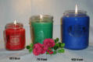

Natural beeswax burns longer, cleaner, and freshens the air as it burns. Our hand-molded apple candles are made from 100 percent beeswax, lightly scented with cinnamon; each will burn for 17-20 hours. They look real because the orignal molds were formed on fresh-picked apples. A wonderful gift for anyone on your list, our pair of candles comes in a miniature wooden crate.

Item #1238
Price: $16.00